Understanding how graphics work on the Game Boy is not easy, despite the process of actually generating data being relatively simple through the use of tools such as Sean Kellys Tile Generator and Chris Antonellis Tile Data Generator. But before we use tools to help speed up the process of creating graphics it is important to understand the mathematics behind how the colour of each pixel on the screen is actually calculated.
When working on low-level programming we should never rely on tools to completely abstract away the complexity of building something, only using them if we actually understand what is going on under the surface. Once you are able to get results without, only then should you start using the tool to increase productivity.
Tiles
When getting graphics to display on the Game Boy screen we have to break down a larger image into a series of 8x8 pixel grids known as tiles. The Game Boy screen is 160 pixels across by 144 pixels down which gives us a grid of tiles 20 across by 18 down:
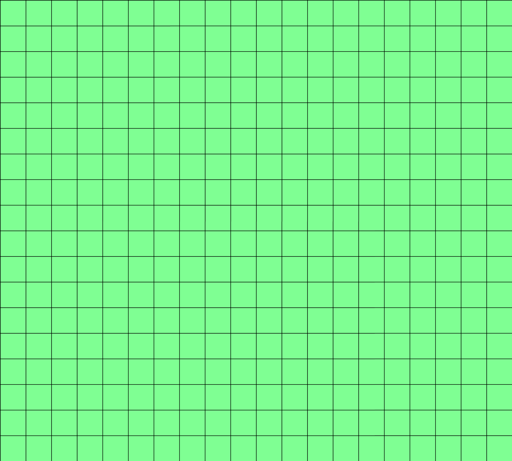
If we zoom in on a single tile we can see that it is made of of 8x8 pixels:
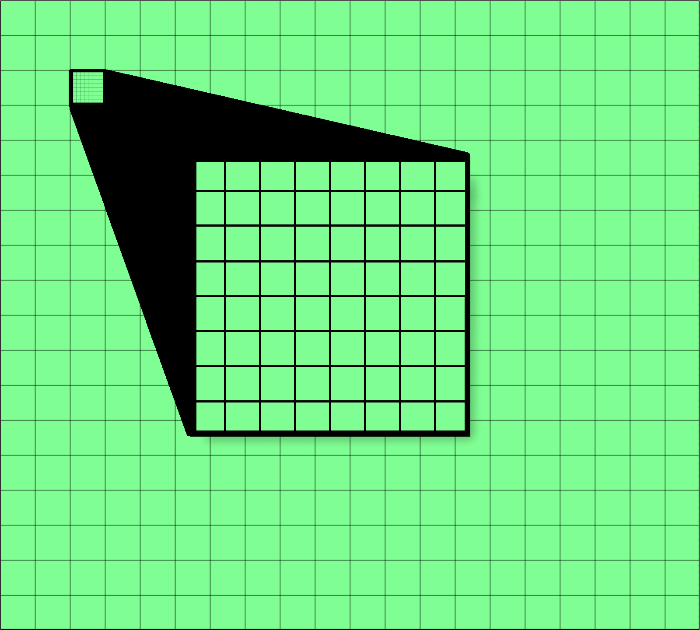
We are also heavily limited on our use of colours:
- 00 - White (very light green)
- 10 - Light Grey (light green)
- 01 - Dark Grey (dark green)
- 11 - Black (very dark green)
Each pixel on the Game Boy screen requires two bits allowing us four colours in total. This means that for a single row of pixel data within an 8x8 tile we require 16 bits (2 bytes) of data (2 bits per pixel, 8 pixels per row = 2x8 = 16 bits). Therefore an entire tile with 8 rows will require 128 bits (8 bytes) of data (16 bits per row, 8 rows per tile = 16 x 8 = 128).
Now, let's have a look at the sort of images we can create with an 8x8 tile with only 4 colours:
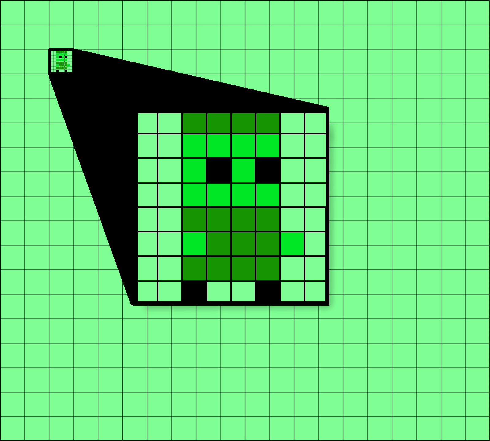
As you can see from this picture of a man it can be very difficult to create detailed images using only 4 colours and such a pixelated display. However we can easily solve this issue by putting several tiles together. In fact, this is exactly what Super Mario does to create the infamous Mario character sprite:
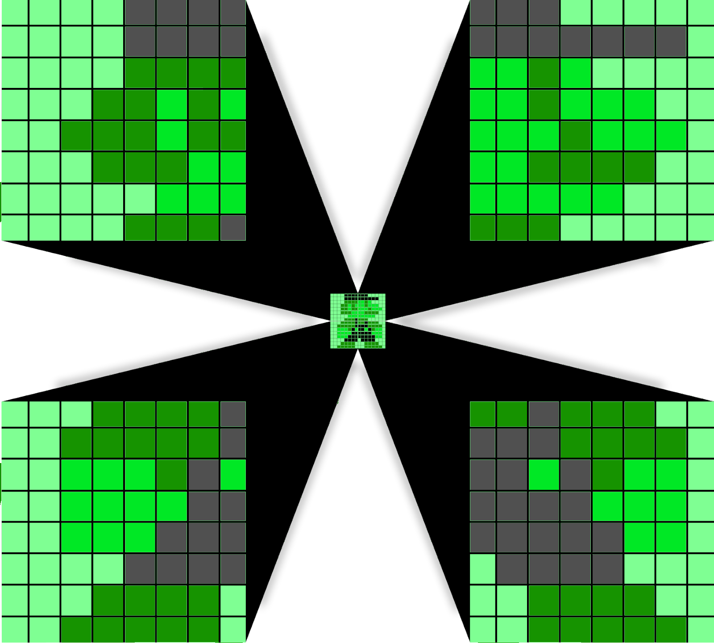
In order to display these images on the Game Boy we need a way to encode the data numerically. We do so by calculating the required colour value for each pixel and then encoding this using either binary or hexadecimal.
Lets start by numbering each of our pixels with the correct colour code:
Next we need to convert our image data into a format that can be read by the Game Boy screen. As you can see each row of the image contains 16 bits (2 bytes) so to create our data representation we take the first bit of each pixel and put them together to create the first byte and the second byte of each pixel to create the second byte:
00000000n00111100When we put these two bytes one above the other you can see that it corresponds to each of the pixels in the top row of our image:
First pixel (00 = White):
| 0 | 0 | 0 | 0 | 0 | 0 | 0 | 0 |
| 0 | 0 | 1 | 1 | 1 | 1 | 0 | 0 |
Second pixel (00 = White):
| 0 | 0 | 0 | 0 | 0 | 0 | 0 | 0 |
| 0 | 0 | 1 | 1 | 1 | 1 | 0 | 0 |
Third pixel (01 = Dark Green/Grey):
| 0 | 0 | 0 | 0 | 0 | 0 | 0 | 0 |
| 0 | 0 | 1 | 1 | 1 | 1 | 0 | 0 |
As you can see when we take the first value from the first byte and the first value from the second byte and combine them it gives us the colour value for each pixel in the row. If we repeat this for each individual row we have 16 bytes in total (2 bytes per row):
Man:nn ; First rown db %00000000n db %00111100nn ; Second rown db %00111100n db %00000000nn ; Third rown db %00111100n db %00010100nn ; Fourth rown db %00111100n db %00000000nn ; Fifth rown db %00000000n db %00111100nn ; Sixth rown db %00100010n db %00011100nn ; Seventh rown db %00000000n db %00111100nn ; Eighth rown db %00010100n db %00010100nnEndMan:We specify a byte in gbZ80 ASM using the % sign with the db opcode.
If you are still a little confused as to how the data we have relates to the image of our man then the secret to understanding is to start on the first row and read down then across. Doing so gives us:
; First rowndb %00000000ndb %0011110000 00 01 01 01 01 00 00Repeating this for each row will give us the correct colour code for each individual pixel.
Representing our image in Hex
Although it is very easy to read image data stored as individual bytes the majority of the time you will actually see the image data represented in hex. You will remember from our lesson on binary hex conversion that a hex number represents four bits. Therefore if we divide our number of bits for the full image (128 bits) by four then we get 32 hex digits to represent all of our image data.
Lets start by converting the first row of our image data into hex:
; First rowndb %00000000ndb %00111100BINARY 0000 = 0 HEXnBINARY 0000 = 0 HEXnBINARY 0011 = 3 HEXnBINARY 1100 = C HEXTherefore we know that to represent these 2 bytes we would use:
$00, $3CIn gbZ80 Assembly the $ sign signifies a byte in hex format. If we calculate the hex representation of each of our rows we get:
Man:nn ; First rown db %00000000 ; $00n db %00111100 ; $3Cnn ; Second rown db %00111100 ; $3Cn db %00000000 ; $00nn ; Third rown db %00111100 ; $3Cn db %00010100 ; $14nn ; Fourth rown db %00111100 ; $3Cn db %00000000 ; $00nn ; Fifth rown db %00000000 ; $00n db %00111100 ; $3Cnn ; Sixth rown db %00100010 ; $22n db %00011100 ; $1Cnn ; Seventh rown db %00000000 ; $00n db %00111100 ; $3Cnn ; Eighth rown db %00010100 ; $14n db %00010100 ; $14nnEndMan:Now lets swap the binary format out and look at the full gbZ80 representation of our image in hex:
Man:n db $00, $3C, $3C, $00, $3C, $14, $3C, $00n db $00, $3C, $22, $1C, $00, $3C, $14, $14nEndMan:Loading tile data into memory
We are now going to look at some sample code to see how we go about loading a tile into memory ready to be used by the screen. Before we go any further lets take a quick look at the Game Boy memory map:
| Start | End | Use |
|---|---|---|
| 0000 | 3FFF | 16KB ROM Bank 0 |
| 4000 | 7FFF | 16KB Switchable ROM Bank |
| 8000 | 9FFF | 8KB Video RAM (VRAM) |
| A000 | BFFF | 8KB External RAM (Cartridge RAM) |
| C000 | CFFF | 4KB Work RAM (Main RAM) |
| D000 | DFFF | 4KB Work RAM (Switchable RAM in CGB mode) |
| E000 | FDFF | 8KB Mirror RAM (unused) |
| FE00 | FE9F | Sprite Attribute Table (OAM) |
| FEA0 | FEFF | Hardware Reserved (not usable) |
| FF00 | FF7F | I/O Registers |
| FF80 | FFFE | High RAM (HRAM) |
| FFFF | FFFF | Interrupts Enable Register (IE) |
As you can see the VRAM is held at memory address 8000-9FFF, however this is actually split up into several sections:
| Start | End | Use |
|---|---|---|
| 8000 | 97FF | Tile Data |
| 9800 | 9BFF | Background Tile Map |
| 9C00 | 9FFF | Window Tile Map |
There is also the Sprite Attribute Table at address FE00-FE9F but you will learn more about this in the advanced hardware section.
The tile data section of memory holds all of the binary or hex information that describes the colour of each pixel in our tiles. This section is again split into 3 blocks:
| Start | End | Use |
|---|---|---|
| 8000 | 87FF | Block 0 |
| 8800 | 8FFF | Block 1 |
| 9000 | 97FF | Block 2 |
For the purposes of this section we are going to take a look at how to load our image of a man:
Man:n db $00, $3C, $3C, $00, $3C, $14, $3C, $00n db $00, $3C, $22, $1C, $00, $3C, $14, $14nEndMan:In order to load our tile data we will need to fetch the values from the specific memory location in our ROM that the data is stored. Fortunately it is easy to check where the data starts and ends since we have specified our start and end addresses using the labels Man and EndMan.
If you haven't already, make sure you read about the CPU to get a basic understanding of gbZ80 ASM as in this section we will be looking at a more practical example. Take particular care to read the section on registers so that you fully understand how we are loading data in and out of the CPU.
Remember that each location in Game Boy memory can hold 8-bits (one byte) of data and is addressed with a 16-bit value. Take a look at the data table which shows us the data held at some addresses in the ROM and VRAM:
| ROM LOCATION | DATA | VRAM LOCATION | DATA | |
|---|---|---|---|---|
| 2000 | %00000000 | 9000 | -------- | |
| 2001 | %00111100 | 9001 | -------- | |
| 2002 | %00111100 | 9002 | -------- | |
| 2003 | %00000000 | 9003 | -------- | |
| 2004 | %00111100 | 9004 | -------- | |
| 2005 | %00010100 | 9005 | -------- | |
| 2006 | %00111100 | 9006 | -------- | |
| 2007 | %00000000 | 9007 | -------- | |
| 2008 | %00000000 | 9008 | -------- | |
| 2009 | %00111100 | 9009 | -------- | |
| 200A | %00100010 | 900A | -------- | |
| 200B | %00011100 | 900B | -------- | |
| 200C | %00000000 | 900C | -------- | |
| 200D | %00111100 | 900D | -------- | |
| 200E | %00010100 | 900E | -------- | |
| 200F | %00010100 | 900F | -------- |
You can see that our image data is stored in our ROM from address 2000 to 200F and at this moment in time there is no data in the VRAM. In order to populate the VRAM with our tile data we will need an assembly program that is able to repeatedly copy data from one place to another.
Since we know each of our registers can only hold 8-bits in order to store a full address we are going to need to use the Game Boys ability to combine registers together to keep track of the addresses that we are loading into. We will store in our registers:
- HL - The location in the tile data block that we are loading the current byte of data into
- DE - The location of the next byte of image data to load into the data block
- BC - Keeps track of how many bytes we still have to load after this one
Lets initialise our values:
ld hl, $9000nld de, Mannld bc, EndMan - ManYou can see that we've loaded 9000 HEX ($) into HL which is the first location of tile data block 2. We have then loaded into DE the address of the first byte ($00) of our image. Lastly we have loaded BC with the number of bytes that we need to load. In our example above the tile data for our image sits at location $2000 of our ROM, therefore the label Man would resolve to $2000. Since there are 16 bytes in our image we know that the EndMan label must resolve to $2010. Therefore when we load BC with EndMan - Man we are actually loading BC with 16 ($2010 - $2000) but the assembler will take care of this for us. Remember that $2010 is in hex.
In order to actually load our data we will write a loop that can load a byte from the ROM into VRAM repeatedly for as long as the value in BC (the total number of bytes left to move) is bigger than zero:
.copyTilen ld a, [de]n ld [hl], an inc hln inc den dec bcn ld a, bn or cn jr nz, .copyImageThere is a lot going on in this code so if you've never worked with gbZ80 before don't panic, we will go over everything in this snippet one step at a time.
Sometimes it can be extremely complicated to understand what is going on in a given piece of code, particularly with Assembly, therefore let's take a look at some pseudocode that breaks down the purpose of each line of code:
- Load the data at address DE into A
- Load data in A into the memory location pointed to by HL
- Increment HL (to point to the next location of VRAM)
- Increment DE (to point to the next byte of data)
- Decrement BC
- Load a with value held in B
- Or with C
- If B is not zero OR C is not zero, repeat
Before we go any further lets look at the full code snippet together:
ld hl, $9000n ld de, Mann ld bc, EndMan - Mann.copyTilen ld a, [de]n ld [hl], an inc hln inc den dec bcn ld a, bn or cn jr nz, .copyImageLets load our registers with some values:
| A | HL | DE | BC |
|---|---|---|---|
| -------- | $9000 | $2000 | $0010 (16) |
The first line of code we run after initialising our registers is:
ld a, [de]You may think that this will load our value of DE into register A but notice that register DE is surrounded by square brackets. This is a signal to the CPU that instead of loading the value held in register DE into register A we load the value at the address pointed to by register DE instead. This is known as direct addressing.
Remember our table of values from before:
| ROM LOCATION | DATA | VRAM LOCATION | DATA | |
|---|---|---|---|---|
| 2000 | %00000000 | 9000 | -------- | |
| 2001 | %00111100 | 9001 | -------- | |
| 2002 | %00111100 | 9002 | -------- | |
| 2003 | %00000000 | 9003 | -------- | |
| 2004 | %00111100 | 9004 | -------- | |
| 2005 | %00010100 | 9005 | -------- | |
| 2006 | %00111100 | 9006 | -------- | |
| 2007 | %00000000 | 9007 | -------- | |
| 2008 | %00000000 | 9008 | -------- | |
| 2009 | %00111100 | 9009 | -------- | |
| 200A | %00100010 | 900A | -------- | |
| 200B | %00011100 | 900B | -------- | |
| 200C | %00000000 | 900C | -------- | |
| 200D | %00111100 | 900D | -------- | |
| 200E | %00010100 | 900E | -------- | |
| 200F | %00010100 | 900F | -------- |
The value held in register DE is $2000, therefore by calling [DE] we are resolving the byte stored at location $2000 and loading it into register A:
| A | HL | DE | BC |
|---|---|---|---|
| %00000000 | $9000 | $2000 | $0010 (16) |
Next we execute:
ld [hl], aAs you can see we have stored the value held in register A into [HL]. Remember that instead of actually putting the value into the HL register, the square brackets tell the CPU to use direct addressing meaning we will put the value into the memory address pointed to by HL. The current value stored in register HL is $9000 and the value in register A is 00000000 therefore after we execute this opcode the state of our VRAM will be:
| ROM LOCATION | DATA | VRAM LOCATION | DATA | |
|---|---|---|---|---|
| 2000 | %00000000 | 9000 | %00000000 | |
| 2001 | %00111100 | 9001 | -------- | |
| 2002 | %00111100 | 9002 | -------- | |
| 2003 | %00000000 | 9003 | -------- | |
| 2004 | %00111100 | 9004 | -------- | |
| 2005 | %00010100 | 9005 | -------- | |
| 2006 | %00111100 | 9006 | -------- | |
| 2007 | %00000000 | 9007 | -------- | |
| 2008 | %00000000 | 9008 | -------- | |
| 2009 | %00111100 | 9009 | -------- | |
| 200A | %00100010 | 900A | -------- | |
| 200B | %00011100 | 900B | -------- | |
| 200C | %00000000 | 900C | -------- | |
| 200D | %00111100 | 900D | -------- | |
| 200E | %00010100 | 900E | -------- | |
| 200F | %00010100 | 900F | -------- |
Our next three lines of code increment HL and DE then decrement BC:
inc hlninc dendec bcIncrement means increase by one and decrement means decrease by one. Lets check the new state of our registers:
| A | HL | DE | BC |
|---|---|---|---|
| %00000000 | $9001 | $2001 | $000F (15) |
Our next line of code will load the value held in register B into A and then OR it with C:
ld a, bnor cThis may seem a strange way to check whether the value held in BC is zero, but lets explore what this actually does. First lets look at the values held in A, B and C individually:
| A | B | C |
|---|---|---|
| -------- | $00 (%00000000) | $0F (%00001111) |
Lets load A with the value held in B:
| A | B | C |
|---|---|---|
| %00000000 | $00 (%00000000) | $0F (%00001111) |
Now lets OR this value with C:
| 0 | 0 | 0 | 0 | 0 | 0 | 0 | 0 | |
| 0 | 0 | 0 | 0 | 1 | 1 | 1 | 1 | OR |
| 0 | 0 | 0 | 0 | 1 | 1 | 1 | 1 |
| A | B | C |
|---|---|---|
| %00001111 | $00 (%00000000) | $0F (%00001111) |
Remember that whenever we perform a logical or comparison operation we set our flags. In this case, after performing the OR operation our Z flag will be unset since the value in A is not zero. In fact, the only way to have our Z flag set after executing these two lines of code will be to have B and C both holding values of zero. So effectively our two lines of code check whether BC is holding a value of zero.
The next line of code is:
jr nz, .copyImageRemember that the JR instruction jumps relative to the current location to another instruction. In this case we jump backwards by 7 instructions to the .copyImage label only if the Z flag is not set. Since we know BC holds a value of 15, it isn't zero so we will repeat our instructions with the values currently held in our registers:
| A | HL | DE | BC |
|---|---|---|---|
| %00111100 | $9001 | $2001 | $000F (15) |
After executing our instructions we will have moved the data held at address [DE] ($2001) to address [HL] ($9001) via the A register:
| ROM LOCATION | DATA | VRAM LOCATION | DATA | |
|---|---|---|---|---|
| 2000 | %00000000 | 9000 | %00000000 | |
| 2001 | %00111100 | 9001 | %00111100 | |
| 2002 | %00111100 | 9002 | -------- | |
| 2003 | %00000000 | 9003 | -------- | |
| 2004 | %00111100 | 9004 | -------- | |
| 2005 | %00010100 | 9005 | -------- | |
| 2006 | %00111100 | 9006 | -------- | |
| 2007 | %00000000 | 9007 | -------- | |
| 2008 | %00000000 | 9008 | -------- | |
| 2009 | %00111100 | 9009 | -------- | |
| 200A | %00100010 | 900A | -------- | |
| 200B | %00011100 | 900B | -------- | |
| 200C | %00000000 | 900C | -------- | |
| 200D | %00111100 | 900D | -------- | |
| 200E | %00010100 | 900E | -------- | |
| 200F | %00010100 | 900F | -------- |
Once our code has executed the state of our registers will be:
| A | HL | DE | BC |
|---|---|---|---|
| %00000000 | $9002 | $2002 | $000E (14) |
The value held in BC is now 14, meaning we will repeat executing our instructions to copy data across 14 more times, once for each remaining address. When our value in BC hits zero the state of our memory will be:
| ROM LOCATION | DATA | VRAM LOCATION | DATA | |
|---|---|---|---|---|
| 2000 | %00000000 | 9000 | %00000000 | |
| 2001 | %00111100 | 9001 | %00111100 | |
| 2002 | %00111100 | 9002 | %00111100 | |
| 2003 | %00000000 | 9003 | %00000000 | |
| 2004 | %00111100 | 9004 | %00111100 | |
| 2005 | %00010100 | 9005 | %00010100 | |
| 2006 | %00111100 | 9006 | %00111100 | |
| 2007 | %00000000 | 9007 | %00000000 | |
| 2008 | %00000000 | 9008 | %00000000 | |
| 2009 | %00111100 | 9009 | %00111100 | |
| 200A | %00100010 | 900A | %00100010 | |
| 200B | %00011100 | 900B | %00011100 | |
| 200C | %00000000 | 900C | %00000000 | |
| 200D | %00111100 | 900D | %00111100 | |
| 200E | %00010100 | 900E | %00010100 | |
| 200F | %00010100 | 900F | %00010100 |
Before we have a look at the results of executing this program, lets have a quick look at the code in full:
Start:n ; SETUP THE GAME BOYnn ld hl, $9000n ld de, Mann ld bc, EndMan - Mannn.copyTilen ld a, [de]n ld [hl], an inc hln inc den dec bcn ld a, bn or cn jr nz, .copyImagenn ; DO SOME MORE SETUPnnMan:n db $00, $3C, $3C, $00, $3C, $14, $3C, $00n db $00, $3C, $22, $1C, $00, $3C, $14, $14nEndMan:Be aware that if you try to assemble the given code using RGBDS then you will run into errors as there are a few more things you need to learn before we can actually get code running on the Game Boy, but lets have a look at what would happen if we were to create a Game Boy ROM with these as the only instructions:
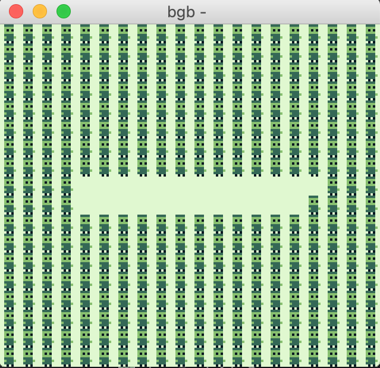
Not the output you were expecting? Those that are familiar with the Game Boy boot screen will see the familiar outline of the Nintendo logo, but why is our custom tile all over the Game Boy screen? Lets take a look at the VRAM viewer in BGB to get a better understanding of what is going on:
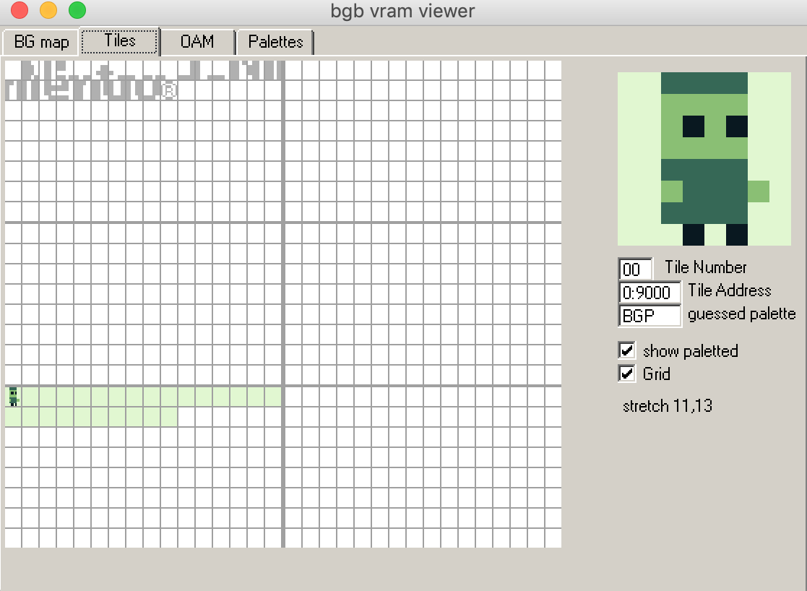
If you look on the right hand side of the window you can see that our custom tile (tile 00) is loaded into tile address 0:9000. This makes sense as we know our code transferred the 16 bytes that make up our man into memory addresses $9000 to $900F. So what is happening on the left hand side of the screen?
Well, remember that tile map memory is split up into three blocks:
| Start | End | Use |
|---|---|---|
| 8000 | 87FF | Block 0 |
| 8800 | 8FFF | Block 1 |
| 9000 | 97FF | Block 2 |
We have loaded our tile data into block 2 (starting at address $9000), which means the bottom left grid of tiles corresponds to tile data bank 2. At the top left we can see the Nintendo Logo data is still held in bank 0 as we never cleared it. Lets check out one of these tiles to see where in memory it is stored:
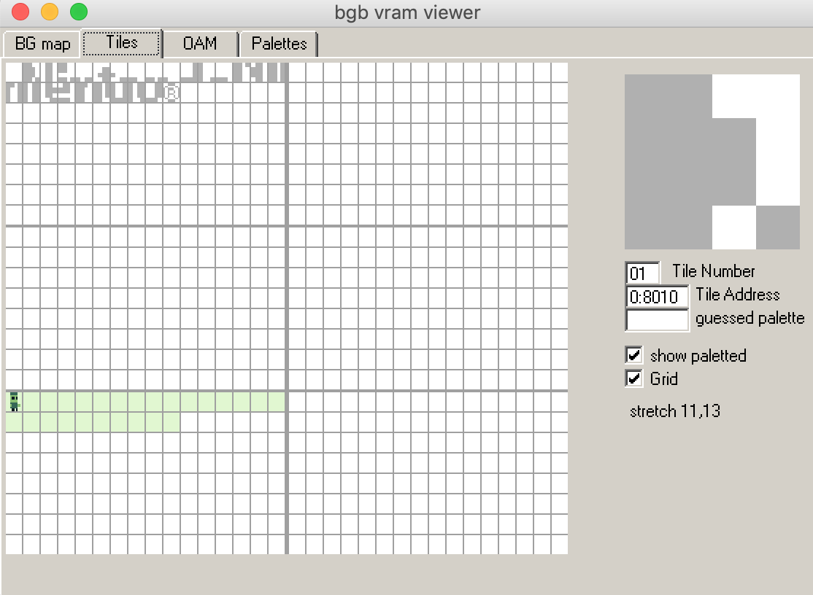
As you can see the top left of the Nintendo logo is held in tile 01 of bank 0, which is address $8010-801F in memory. Lets now modify our code so that we can overwrite the top left of the Nintendo logo:
Start:n ; SETUP THE GAME BOYnn ld hl, $8010n ld de, Mann ld bc, EndMan - Mannn.copyTilen ld a, [de]n ld [hl], an inc hln inc den dec bcn ld a, bn or cn jr nz, .copyImagenn ; DO SOME MORE SETUPnnMan:n db $00, $3C, $3C, $00, $3C, $14, $3C, $00n db $00, $3C, $22, $1C, $00, $3C, $14, $14nEndMan:Notice that all of this code is the same except for the initial value of HL. We have changed this to $8010 to reflect that we are overwriting tile 01 of bank 0:
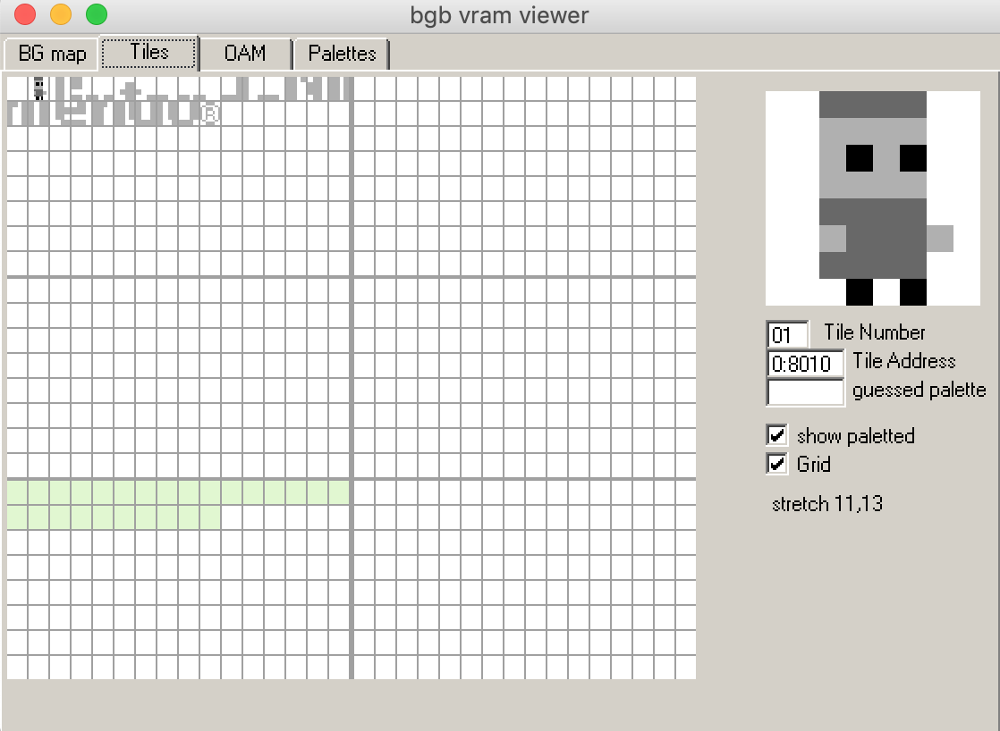
As you can see we are easily able to overwrite specific tiles anywhere in our tile banks if we know their location in memory. Next we will look at how to tell the Game Boy which tile bank we want to use, but first let us discuss why the VRAM viewer is showing 6 banks of tiles instead of the 3 we originally looked at.
We know that the Game Boy has three blocks of tile data:
| Start | End | Use |
|---|---|---|
| 8000 | 87FF | Block 0 |
| 8800 | 8FFF | Block 1 |
| 9000 | 97FF | Block 2 |
However the Game Boy Color also has a second VRAM bank which we haven't yet discussed. Therefore because BGB is GB Color compatible it shows us the extra bank even though we aren't going to be using it.
Since we are going to be programming games that are compatible on both the original GB and the Color we won't be looking at how to switch to this extra bank, but remember the option is there if you eventually want to write games that are compatible with the Color exclusively.
LCDC Register (LCD Control)
There is a special register known as the LCDC which tells the screen (Liquid Crystal Display) which mode it should currently be in. We won't go into too much detail about this register now as we will look at all the options as and when we need them, but let us take a quick look at all the modes we can enable and disable using the LCDC.
Remember that a register is made up of a byte, or 8-bits. This means that with the LCDC register we can enable and disable 8 different modes on the Game Boy screen (the following is taken directly from the gbdev wiki):
- Bit 7 - LCD Display Enable
- Bit 6 - Window Tile Map Display Select
- Bit 5 - Window Display Enable
- Bit 4 - BG & Window Tile Data Select
- Bit 3 - BG Tile Map Display Select
- Bit 2 - OBJ (Sprite) Size
- Bit 1 - OBJ (Sprite) Display Enable
- Bit 0 - BG/Window Display/Priority
There is a lot going on here so we will just go over the bits we actually need to look at for the purposes of getting data on the screen.
In our code example we inserted a placeholder comment to explain that we were doing some 'setting up' of the Game Boy. Part of this setting up is telling the screen which mode it needs to be in before we change the tile data. To disable the screen fully we will write a value of 0 into the LCDC register:
ld a, %00000000nld [rLCDC], aThis isn't strictly necessary but it is good practice when working with any old technology to disable the screen before changing data that should display on the screen.
After we have written our data into VRAM we then need to re-enable the screen. To do this we will write enable into bit 7 (LCD enable) and bit 0 (background enable):
ld a, %10000001nld [rLCDC], aHowever this is enabling the LCD and setting the tile data select to use tile data block 2. If we want to use block 0 we have to enable it on bit 4:
ld a, %10010001nld [rLCDC], aWe have now set the screen to use block 0 and written our custom tile into location $8010 (to overwrite the top left of the Nintendo logo):
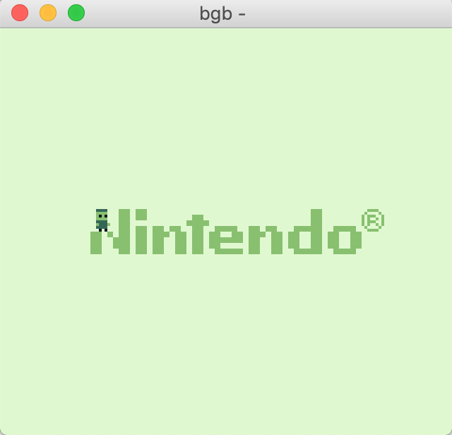
This is what VRAM looks like:
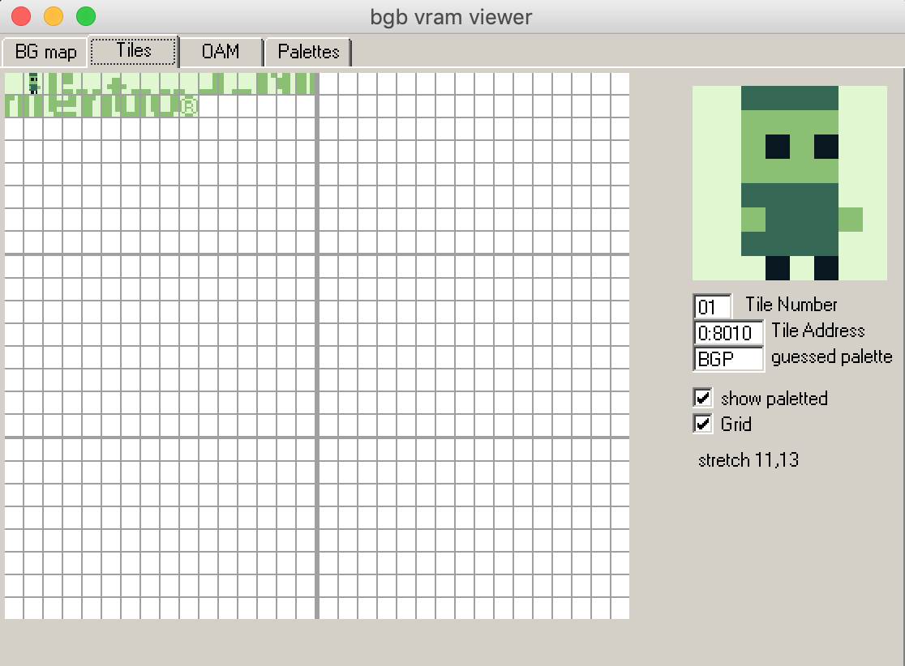
And our final code:
Start:n ; SETUP THE GAME BOYnn ld a, %00000000n ld [rLCDC], ann ld hl, $8010n ld de, Mann ld bc, EndMan - Mannn.copyTilen ld a, [de]n ld [hl], an inc hln inc den dec bcn ld a, bn or cn jr nz, .copyImagenn ld a, %10010001n ld [rLCDC], ann ; DO SOME MORE SETUPnnMan:n db $00, $3C, $3C, $00, $3C, $14, $3C, $00n db $00, $3C, $22, $1C, $00, $3C, $14, $14nEndMan:At this stage we know nearly everything we need to interact with the background layer and control the screen. Our next step will be to control which tile should display at which location.
Tile Map
Remember we looked earlier at our breakdown of VRAM:
| Start | End | Use |
|---|---|---|
| 8000 | 97FF | Tile Data |
| 9800 | 9BFF | Background Tile Map |
| 9C00 | 9FFF | Window Tile Map |
We have already learned the purpose of the three tile data banks stored from $8000 to $97FF, but what about the rest of VRAM? Well, remember that when we discussed the screen we mentioned that we have 20 horizontal tiles by 18 vertical tiles:
This is actually a little bit of a lie. It is true that at any given time there are 360 tiles visible on the screen, but actually our memory is capable of holding a total of 32x32 tiles (giving us a total of 1024 tiles). If we calculate the total number of memory addresses between location $9800 and $9C00 (9C00 - 9800) we get exactly 1024 tiles (400) therefore we know that the Background Tile Map can keep track of the correct tile to show for a specific tile on screen.
To help illustrate the point, look at this screenshot from the Super Mario Land game ROM:
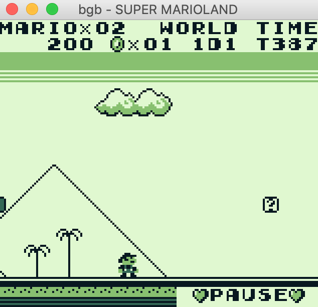
Each tile on this screen must be loaded into memory:
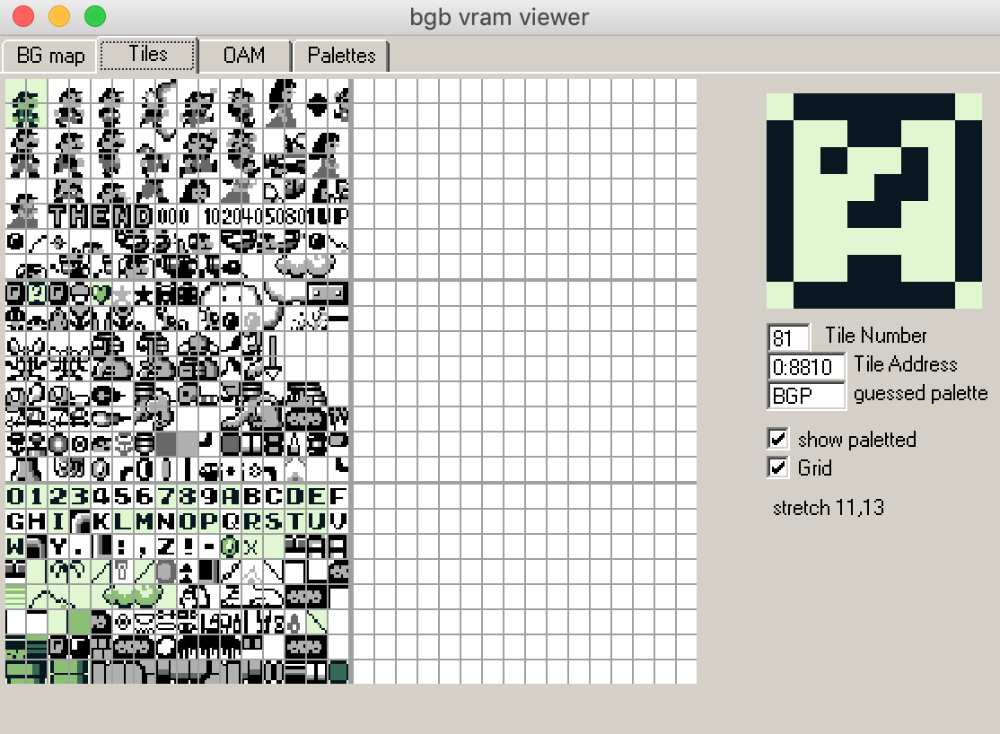
You can see that the question mark box has its corresponding tile data mapped into location $8810. Since we know there are 16 bytes of memory for each tile this makes it tile $81:
$8810 - $8000 = $810n$810 / $10 = $81Or in decimal tile 129:
34,832 - 32,768 = 2,064n2,064 / 16 = 129Each position on the screen must also map to a tile in memory:
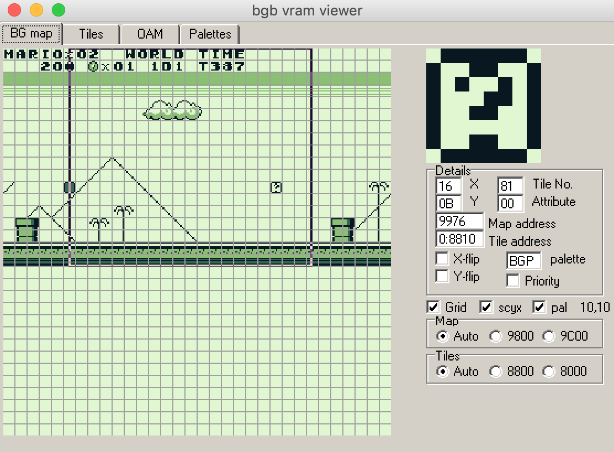
You will see that the map to the question mark box is stored at address $9976 of the tile map which makes it tile $177 (remember we include tile $9800 in our count). $177 in decimal is 374 and if you want to check then you will see the tile is on the 12th row at position 23:
(11 * 32) + 22 = 352 + 23 = 377If we check the value held at position $9976 in our debugger you will see that it holds a value of $81 (look at the bottom left section of the debugger and you will see column 7 of row $9970 holds a value of $81):
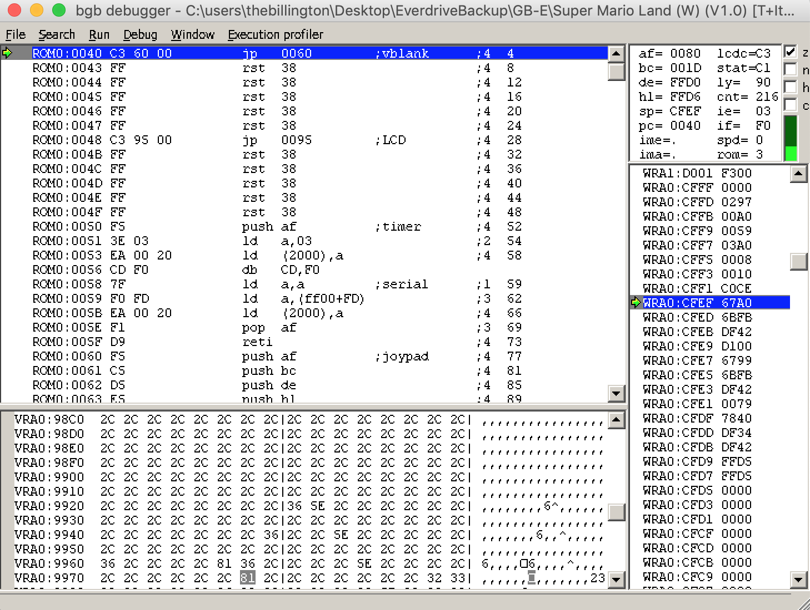
This is all very well, but how does it actually correspond to us being able to put our man at a specific location?
Remember before we had our image of a man stored at location 0 of tile data bank 2:
Remember when we loaded our image data into position $2000 (VRAM bank 2)? We are about to use the same code again, but instead of referring to our image as Man we will refer to it as TileData and add an empty tile to the start:
Start:n ; SETUP THE GAME BOYnn ld a, %00000000n ld [rLCDC], ann ld hl, $9000n ld de, TileDatan ld bc, EndTileData - TileDatann.copyTilen ld a, [de]n ld [hl], an inc hln inc den dec bcn ld a, bn or cn jr nz, .copyImagenn ld a, %10000001n ld [rLCDC], ann ; DO SOME MORE SETUPnnTileData:n ; Blank tilen db $00, $00, $00, $00, $00, $00, $00, $00n db $00, $00, $00, $00, $00, $00, $00, $00nn ; Mann db $00, $3C, $3C, $00, $3C, $14, $3C, $00n db $00, $3C, $22, $1C, $00, $3C, $14, $14nEndTileData:When we run this code the VRAM viewer looks like this (notice that we are no longer enabling position 4 of the LCDC register):
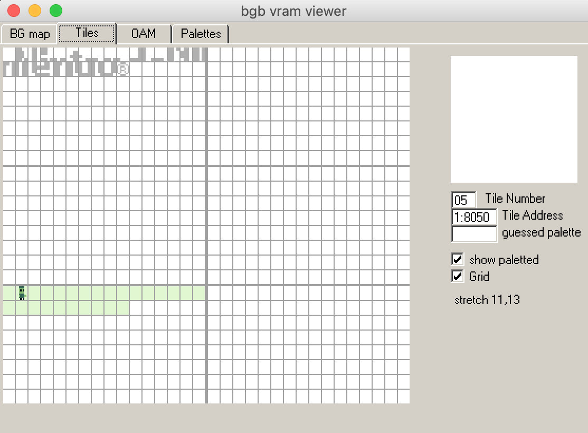
You can see that the man currently appears on the screen at the top left of where the Nintendo logo would have been:
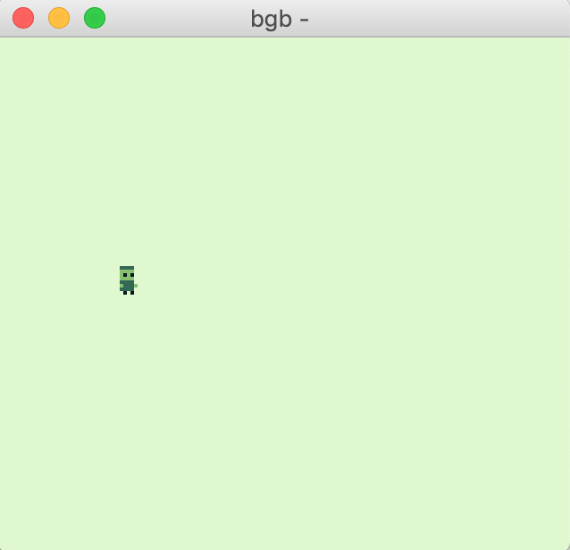
Although we now have the man shown on screen on his own which is a desirable outcome, this is unintentional and only because of our tile happening to be over where the Nintendo logo was originally showing. So next we will write a quick loop to clear the screen. We will do this by iterating over every tile map location in our background tile map (from $9800 to $9BFF):
ld hl, $9800n ld de, $5FFn.clearLoopn ld a, 0n ld [hl], an inc hln dec den ld a, en or dn jr nz, .clearLoopThis code simply loads a value of 0 into every memory location from $9800 to $9BFF. It does so by repeatedly loading A with a value of zero and putting this into HL before incrementing HL and checking whether we have done this for every location $5FF times. After we have run this code the screen is cleared (meaning every tile location is using the tile we stored at location $9000, which is blank):
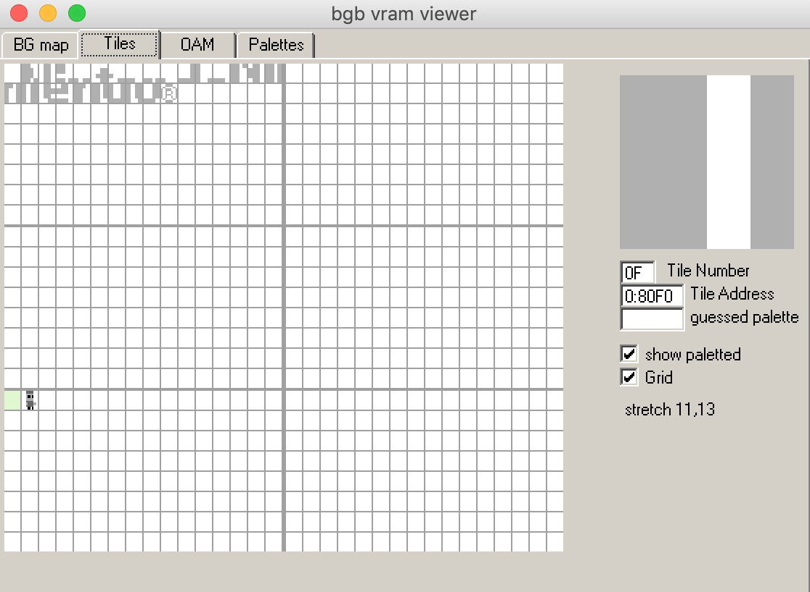
Now the last step is to decide where we want our man to be. Why not go for the bottom left corner? We will put him on the 1st tile in from the right and 1st tile up from the bottom. Remember that this will be the 17th row, so we have to count the 32 tiles on the preceding 16 rows to calculate the position we want the man to go:
16 * 32 = 512n512 + 1 = 513nDENARY 513 = 201 HEXSince we know the position of the top left tile is at memory address $9800, we must put a value of $01 into memory location $9A01 ($9800 + $201):
ld hl, $9A01nld a, $01nld [hl], aNow for the code in full:
Start:n ; SETUP THE GAME BOYnn ld a, %00000000n ld [rLCDC], ann ld hl, $9000n ld de, TileDatan ld bc, EndTileData - TileDatann.copyTilen ld a, [de]n ld [hl], an inc hln inc den dec bcn ld a, bn or cn jr nz, .copyImagenn ld hl, $9800n ld de, $5FFn.clearLoopn ld a, 0n ld [hl], an inc hln dec den ld a, en or dn jr nz, .clearLoopnn ld hl, $9A01n ld a, $01n ld [hl], ann ld a, %10000001n ld [rLCDC], ann ; DO SOME MORE SETUPnnTileData:n ; Blank tilen db $00, $00, $00, $00, $00, $00, $00, $00n db $00, $00, $00, $00, $00, $00, $00, $00nn ; Mann db $00, $3C, $3C, $00, $3C, $14, $3C, $00n db $00, $3C, $22, $1C, $00, $3C, $14, $14nEndTileData:And the final output:
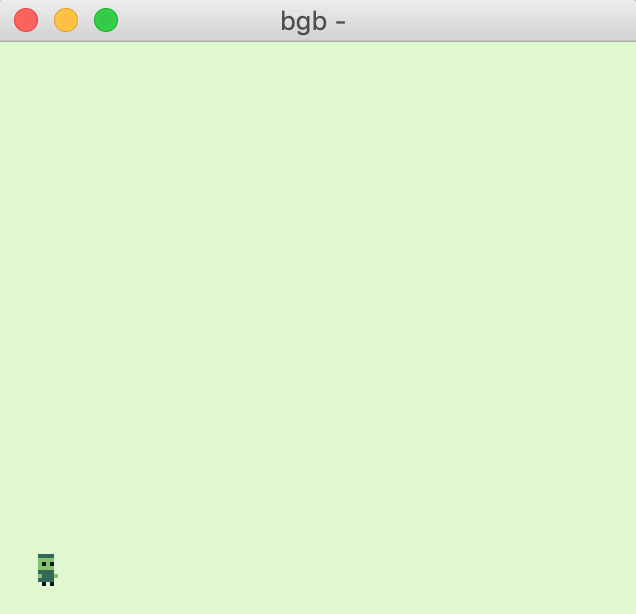